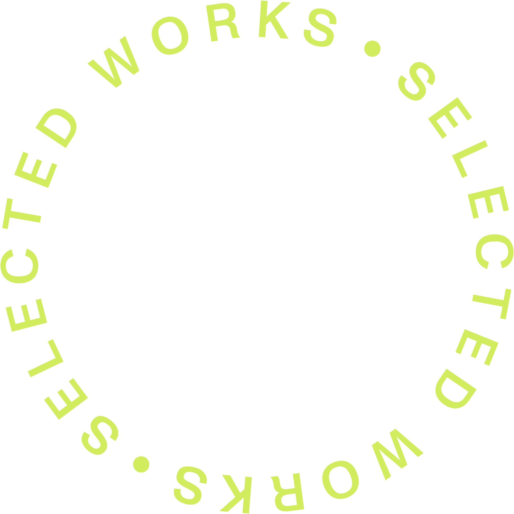
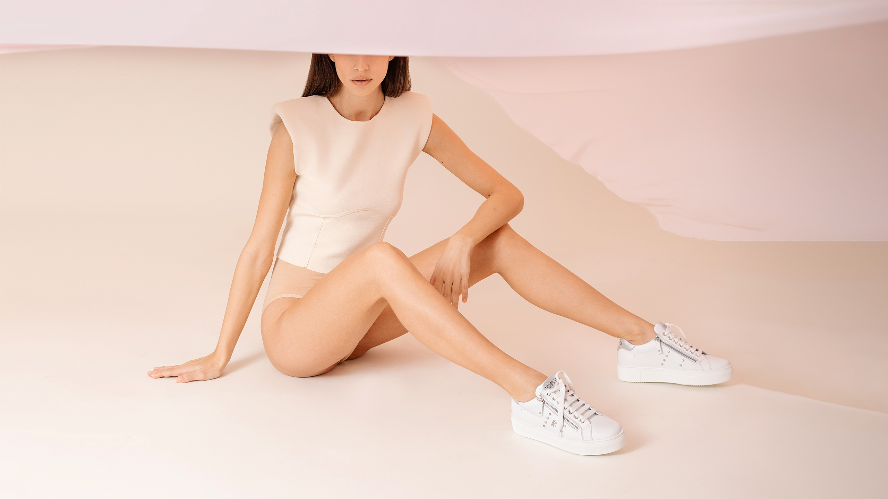
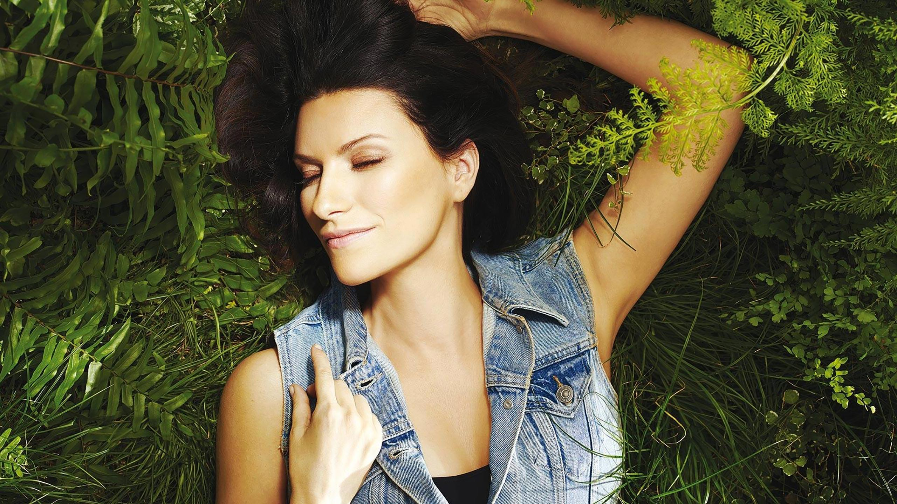
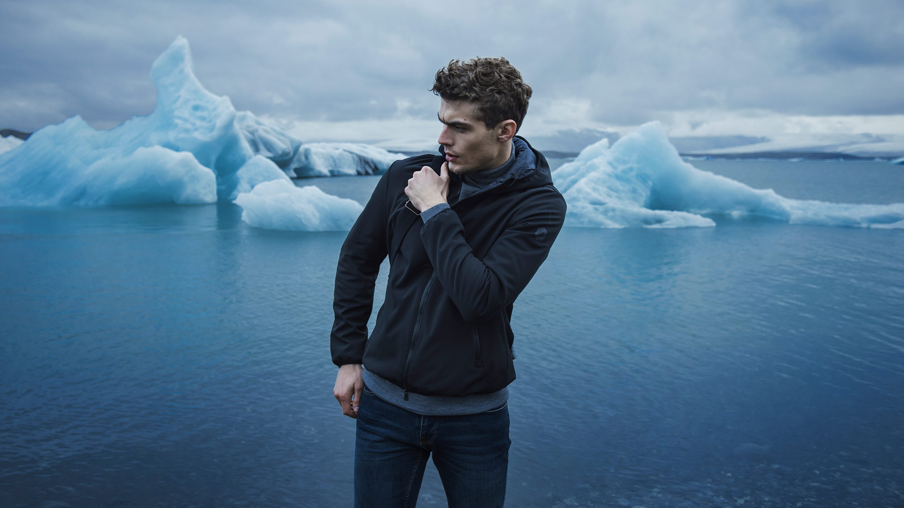
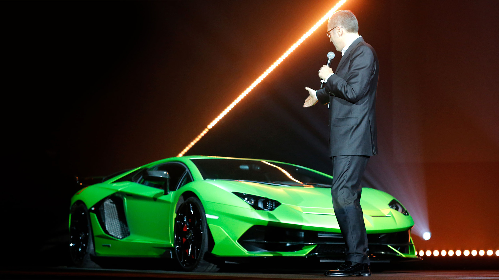

Art Direction web & Digital Design
Siamo un'agenzia di comunicazione italiana pluripremiata, specializzata in digital creative experiences.
Grazie ad un team di talenti giovani, dinamici e motivati, da oltre 15 anni, realizziamo progetti all’avanguardia, dal design unico e innovativo, unendo creatività, strategia e tecnologia.

-
Calliope Live the Beauty
Shooting .Ads Campaign Concept, Scouting, Casting, Art Direction, Produzione -

Cromia Storie di stile
Shooting .Ads Campaign Concept, Scouting, Casting, Art Direction, Produzione -

KeysWebsite
Web & Digital / Ecommerce Website Art Direction, Design, UI,UX,Development -

Laura pausiniSimili
Web & Digital / personal Website Art Direction, Design, UI,UX,Development -

Double Eight Iceland
Shooting / Adv Campaign Concept, Scouting, Casting, Art Direction, Produzione -

LamborghiniWe made it
Identity Brand Identity per L'evento "year Celebration" in Collaborazione con Free Event